Dzieci z opinią o potrzebie WWR
Realizujemy bezpłatne wczesne wspomaganie rozwoju dla dzieci posiadających opinię z poradni.
Pod jednym dachem zapewniamy diagnozę i terapię prowadzoną przez doświadczonych specjalistów — bez konieczności szukania pomocy poza przedszkolem.

Wczesne wspomaganie rozwoju (WWR) to bezpłatne, zindywidualizowane zajęcia dla dzieci, które posiadają opinię o potrzebie wczesnego wspomagania rozwoju. Ich celem jest jak najwcześniejsze, kompleksowe wspieranie rozwoju malucha — w mowie, ruchu, emocjach i kontaktach z rówieśnikami.
Zajęcia prowadzi nasz zespół specjalistów na terenie przedszkola, w znanym i bezpiecznym dla dziecka otoczeniu, a ich zakres dobieramy do indywidualnych potrzeb.
Zapraszamy, jeśli chcesz wesprzeć rozwój dziecka lub obserwujesz u niego trudności w którymś z poniższych obszarów. Pierwszym krokiem zawsze jest spokojna rozmowa i obserwacja.
Realizujemy bezpłatne wczesne wspomaganie rozwoju dla dzieci posiadających opinię z poradni.
Opóźniona lub niewyraźna mowa, trudności z porozumiewaniem się i wymową.
Wsparcie w wyrażaniu emocji, budowaniu relacji z rówieśnikami i radzeniu sobie w grupie.
Nadmierna lub obniżona wrażliwość na bodźce, trudności z koncentracją i równowagą.
Wsparcie prawidłowego rozwoju ruchowego, koordynacji oraz korekcja postawy.
Wspieranie uwagi, samodzielności i pokonywania trudności w uczeniu się.
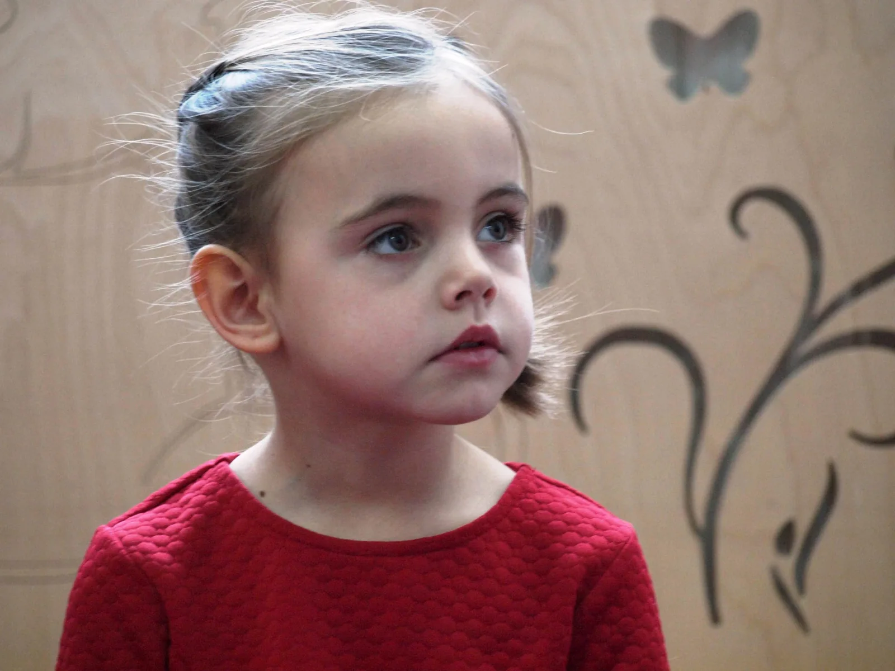
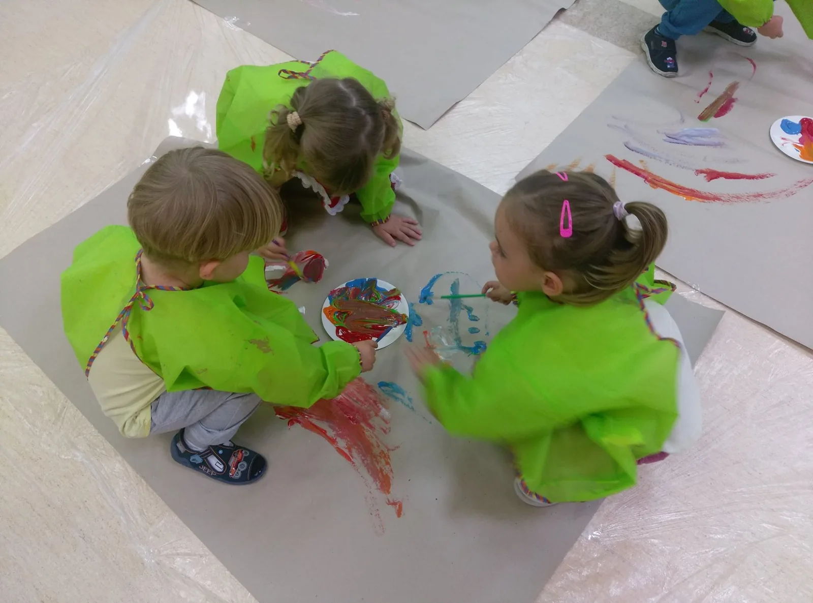
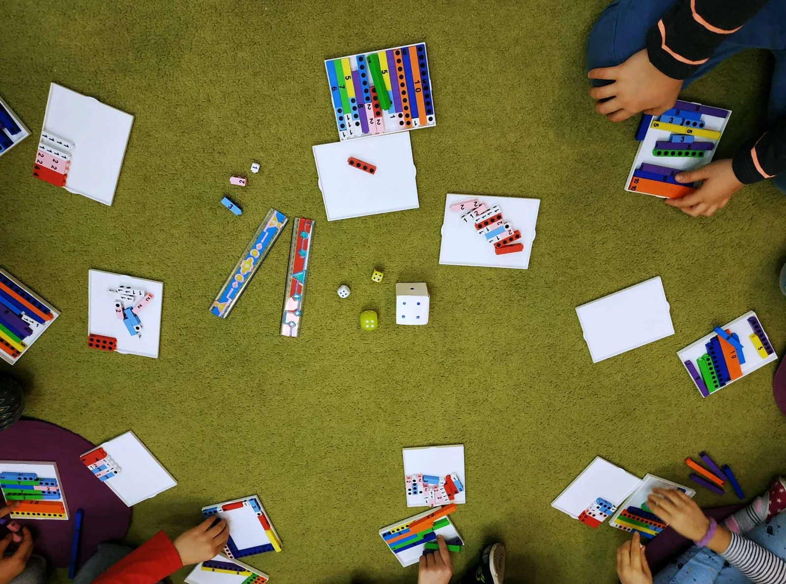
Dzieci są pod opieką doświadczonych specjalistów bez wychodzenia z przedszkola — terapia odbywa się w znanym, bezpiecznym otoczeniu.
Diagnoza i terapia mowy — wspieramy prawidłowy rozwój artykulacji, słuchu fonematycznego i komunikacji.
Wsparcie emocjonalne i społeczne dziecka oraz konsultacje dla rodziców w codziennych wyzwaniach.
Terapia wspierająca przetwarzanie bodźców zmysłowych, koncentrację i równowagę.
Ćwiczenia korygujące postawę i wspierające prawidłowy rozwój ruchowy malucha.
Wspieranie koncentracji, gotowości szkolnej oraz pokonywania trudności w uczeniu się.
Trening umiejętności społecznych — nauka współpracy, rozpoznawania emocji i budowania relacji.
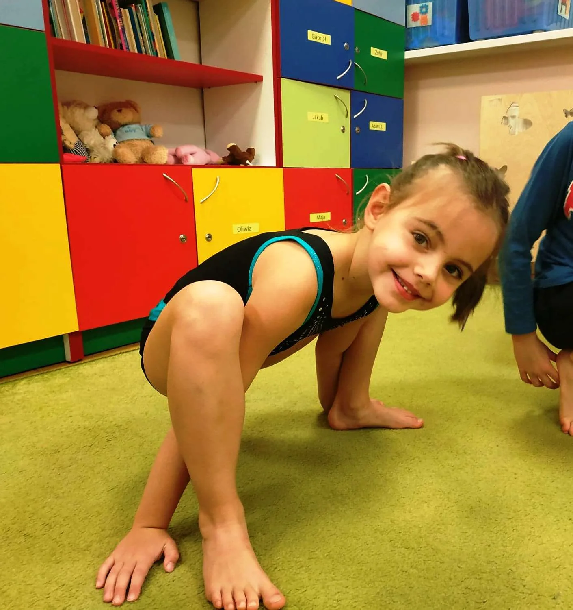
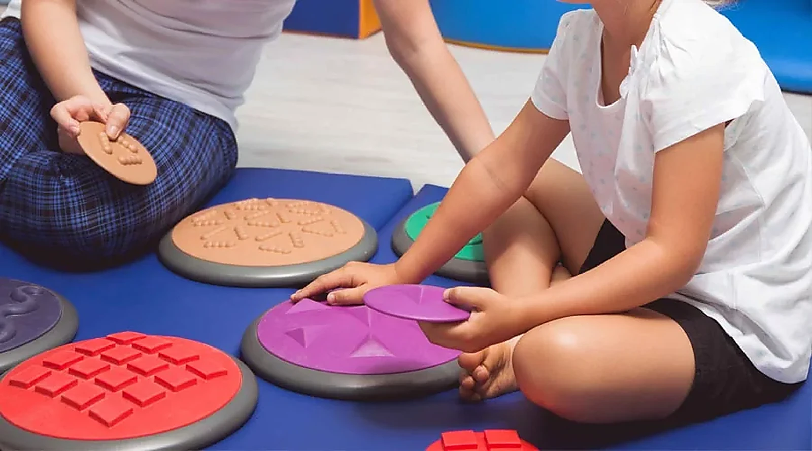
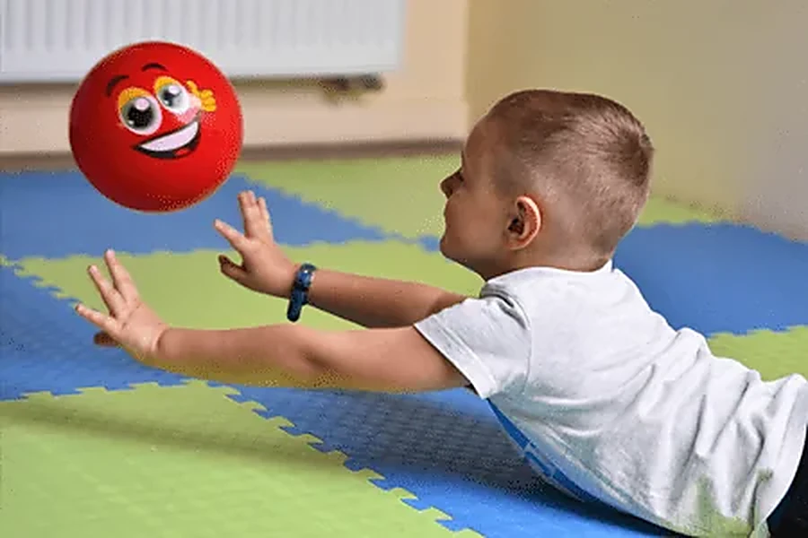
Terapie prowadzą doświadczeni specjaliści „Czarodziejskiego Dworku”. Poznaj osoby, które zajmą się rozwojem Twojego dziecka.
Neurologopeda
Neurologopeda

Psycholog
Psycholog, terapeuta
Psycholog, psychoterapeuta
Pedagog specjalny, terapeuta SI

Pedagog, terapeuta SI
Fizjoterapeuta, terapeuta SI

Pedagog, terapeuta

Pedagog specjalny

Pedagog specjalny, terapeuta

Pedagog specjalny, terapeuta

Pedagog specjalny
Od pierwszego telefonu do regularnych zajęć — krok po kroku, spokojnie i z myślą o dziecku.
Zadzwoń pod 690 629 501 lub wyślij formularz poniżej. Opisz krótko, czego potrzebuje Twoje dziecko.
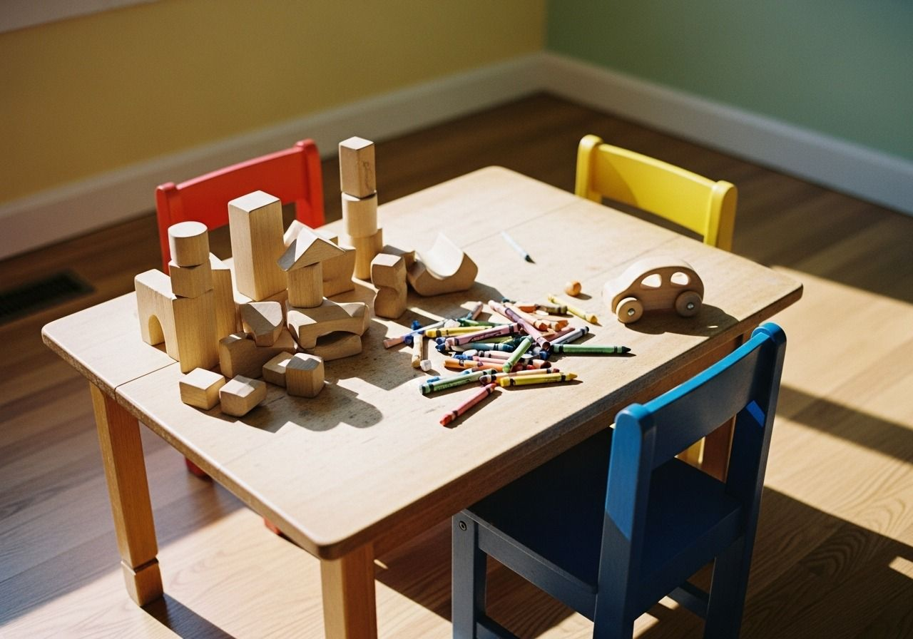
Umawiamy spotkanie, poznajemy dziecko i jego potrzeby oraz rozmawiamy z rodzicami o oczekiwaniach.
Dobieramy odpowiednie terapie i specjalistów, tworząc plan dopasowany do możliwości dziecka.
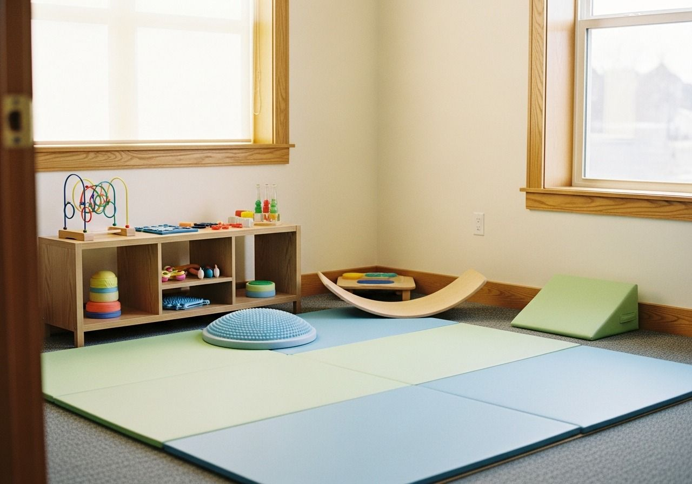
Prowadzimy terapię na miejscu, a postępy na bieżąco omawiamy z rodzicami podczas konsultacji.
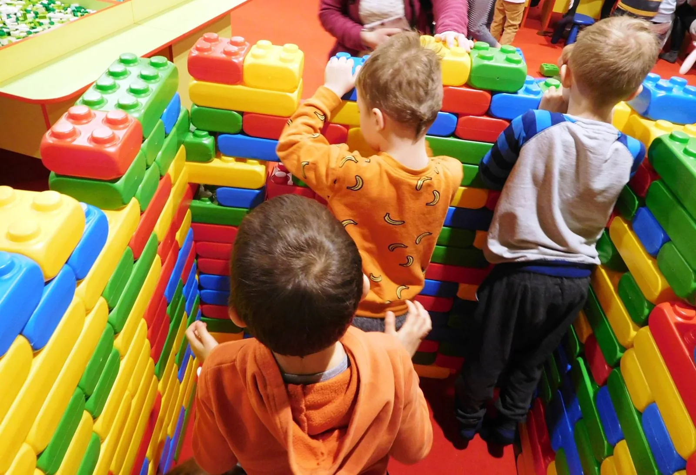
Dla przyszłych przedszkolaków (rocznik 2023) organizujemy bezpłatne, sobotnie zajęcia adaptacyjne. To czas, by dziecko — razem z rodzicem — spokojnie poznało przedszkole, panie i nowych kolegów jeszcze przed rozpoczęciem roku.
Bez pośpiechu i stresu — dziecko oswaja się z przedszkolem we własnym tempie, w obecności rodzica.
Dziecko z rodzicem zwiedza sale i plac zabaw oraz poznaje panie — w przyjaznej, swobodnej atmosferze.
Zabawy, piosenki i aktywności w małej grupie pomagają dziecku poczuć się pewnie wśród rówieśników.
Krok po kroku, bez pośpiechu — pierwszy dzień w przedszkolu nie jest już dla dziecka niewiadomą.
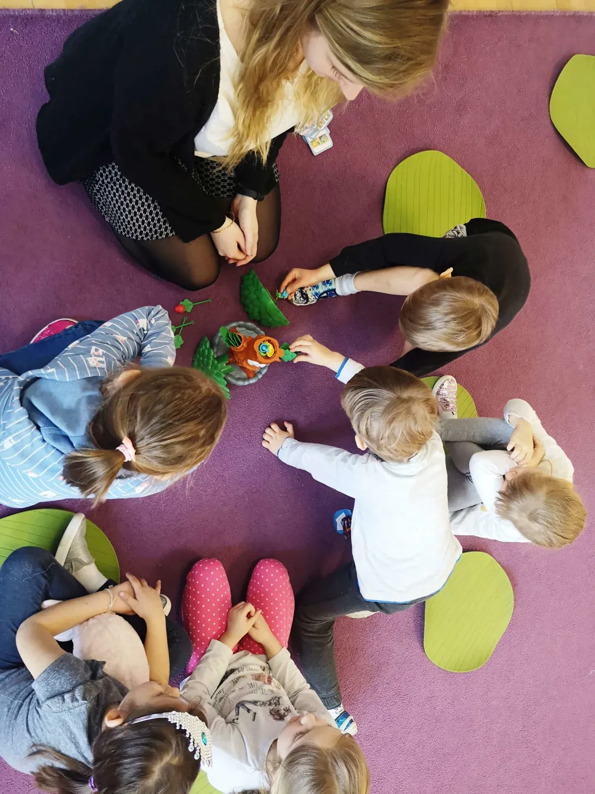
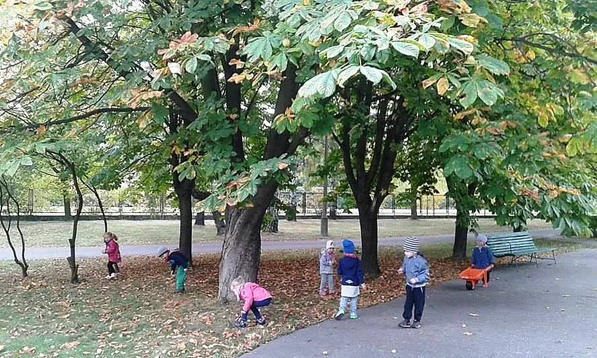
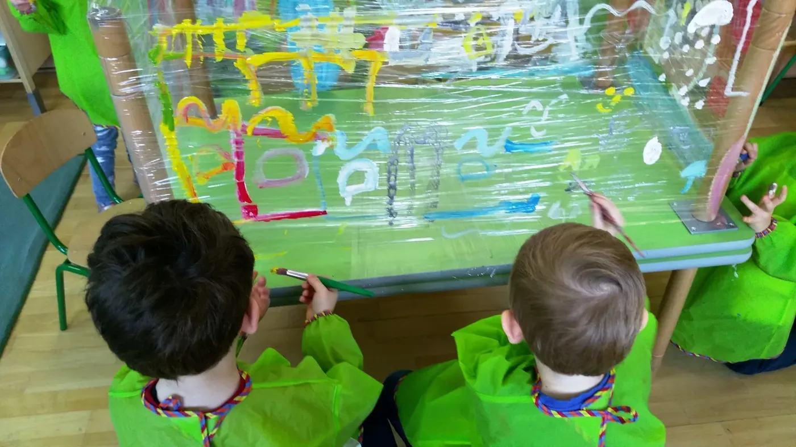
Adaptacja to wspólna sprawa — podpowiadamy, jak przygotować dziecko, i jesteśmy obok rodziców na każdym kroku.
Sobotnie zajęcia adaptacyjne są bezpłatne i przeznaczone dla dzieci z rocznika 2023. Konkretne terminy oraz zapisy ogłaszamy na bieżąco na naszym Facebooku — zajrzyj tam albo po prostu do nas zadzwoń, a wszystko podpowiemy.
lub zadzwoń: 690 629 501
Zebraliśmy odpowiedzi na pytania, które najczęściej zadają rodzice. Nie znalazłeś swojego? Napisz lub zadzwoń.
To bezpłatne, zindywidualizowane zajęcia, których celem jest jak najwcześniejsze wspieranie rozwoju dziecka. Prowadzi je zespół specjalistów, a zakres dobieramy do indywidualnych potrzeb malucha — w obszarze mowy, ruchu, emocji i relacji z rówieśnikami.
Nie. WWR jest całkowicie bezpłatne dla rodziców — realizujemy je dla dzieci posiadających opinię o potrzebie wczesnego wspomagania rozwoju.
Opinię o potrzebie wczesnego wspomagania rozwoju wydaje publiczna poradnia psychologiczno-pedagogiczna na wniosek rodzica. Chętnie podpowiemy, jak się do tego przygotować — wystarczy się z nami skontaktować.
Wszystkie zajęcia prowadzimy na miejscu, w przedszkolu — w znanym dziecku, bezpiecznym otoczeniu, bez konieczności dojazdów do innych placówek.
Wystarczy zadzwonić pod 690 629 501 lub wypełnić formularz poniżej. Umówimy rozmowę i obserwację, a następnie zaproponujemy plan wsparcia dopasowany do dziecka.
Tak. Stały kontakt i konsultacje z rodzicami to podstawa naszej pracy — regularnie omawiamy postępy i wspólnie ustalamy kolejne kroki.
Zostaw zapytanie, a nasi specjaliści odezwą się i doradzą najlepsze rozwiązanie. Możesz też po prostu zadzwonić.
Wolisz porozmawiać? Zadzwoń — chętnie odpowiemy na pytania i umówimy spotkanie.
Nasi specjaliści chętnie odpowiedzą na pytania i doradzą najlepsze rozwiązania.